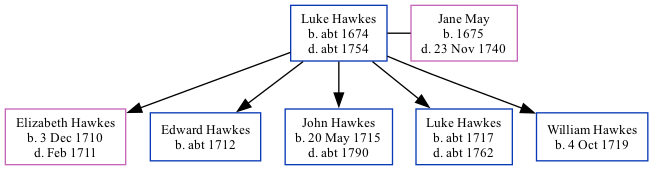

Luke Hawkes c1674 - c1754
[ Home ] | [ Calendar ] | [ Surnames Index ] | [ Family History ]Luke Hawkes, the 7 times great-grandfather of <a href="I1.html">Nigel Horne</a>, was born in Fordwich, Kent, England <i>c.</i> 1674<span class="citation">1,2</span> and married Jane May (with whom he had 5 children: <a href="I648.html">Elizabeth</a>, <a href="I650.html">Edward</a>, <a href="I651.html">John</a>, <a href="I615.html">Luke</a> and <a href="I649.html">William</a>) in Fordwich on Oct 30, 1709<span class="citation">3</span>.<p>He died <i>c.</i> 1754 in Fordwich<span class="citation">1,2</span> and was buried there on Mar 6, 1754<span class="citation">1,2</span>.
Children
- Elizabeth was born on Dec 3, 1710
- Edward was born c. 1712
- John was born on May 20, 1715
- Luke was born c. 1717
- William was born on Oct 4, 1719
Citations
- England, Select Deaths and Burials, 1538-1991 Ancestry.com Operations, Inc.
- Kent, England, Tyler Index to Parish Registers, 1538-1874 Online publication - Provo, UT, USA: Ancestry.com Operations, Inc., 2010. This collection was indexed by Ancestry World Archives Project contributors.Original data - Frank Watt Tyler. The Tyler Collection. Canterbury, Kent, England: The Institute of Herald
- England Marriages 1538-1973 - Findmypast
Family Tree
Generated by Ged2Site. Last updated on Jul 20, 2025